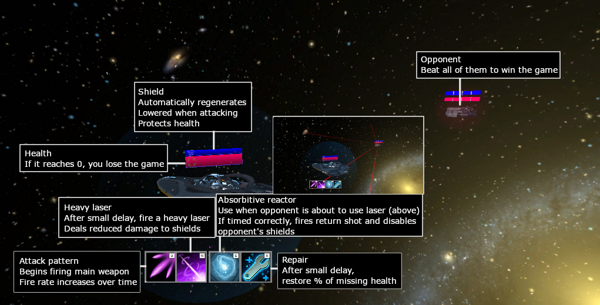

Valence is sometimes called "pleasantness", and is associated with pleasure or attractiveness
Events that are desirable, or that we want, are positively valenced, and events that are undesirable, that we don't want, are negatively valenced
Valence is independent of the activity level
Excitement is an active positively valenced emotion, while satisfaction is an inactive positively valenced emotion
Nervousness is an active negatively valenced emotion, while boredom is an inactive negatively valenced emotion
Examples of high-valence emotions include joy, excitement, satisfaction, or triumph
Examples of low-valence emotions include sadness, fear, anger, or disgust
Examples of high-valence activities in games may be passing an opponent in a driving game, finishing a quest in a role-playing game (RPG), and landing a combo in a fighting game
Examples of low-valence activities in games may be being passed in a driving game, losing a unit in a tactics game, and losing an objective in a multiplayer online battle arena (MOBA)
In Galactic Defense, high-valence activities include, but are not limited to, defeating an opponent, dealing a large amount of damage, or absorbing a heavy laser
Low-valence activities in Galactic Defense include being defeated, receiving a heavy laser attack, or receiving large amounts of damage
Arousal
Arousal is an emotional dimension associated with energy or activity
Arousal is a state of heightened activity, which may be pleasant or unpleasant. The level of arousal describes the activity or energy of an emotion
Exhuberation/Joy is a pleasant high-arousal emotion, while hate is an unpleasant high-arousal emotion - both are highly energetic
Contentment is a pleasant low-arousal emotion, while guilt is an unpleasant low-arousal emotion - both are low-energy
Examples of high-arousal emotions include excitement, anger, or triumph
Examples of low-arousal emotions include satisfaction, depression, exhaustion, or relaxation
In games, arousal is linked to the activity level of the game, or the amount of things going on
Examples of high-arousal activities in games may include executing a combo in a fighting game, or completing a series of jumps in a platforming game
Examples of low-arousal activities in games may include waiting for a cooldown to finish, blocking a series of attacks, or watching for opponent actions
In Galactic Defense, some high-arousal activities include firing a combo or laser, firing to interrupt an opponent's heal, or absorbing a heavy laser and returning fire
Examples of low-arousal activities in Galactic Defense include watching the opponent to parry a heavy laser or stopping fire to raise shields
Tension
Tension is an emotional dimension associated with events in the future. Tension may be pleasant or unpleasant
Excitement is a pleasant, high-tension emotion - something that we want might be coming
Satisfaction is a pleasant, low-tension emotion - something we wanted has happened
Fear is an example of an unpleasant, high-tension emotion - something that we don't want might be coming
Sadness is an example of low negative tension - something we didn't want has happened
Examples of high-tension emotions include fear, excitement, or unease
Examples of low-tension emotions include satisfaction, sadness, and joy
Examples of high-tension situations in games may be playing X-Com, when a shell is coming in Mario Kart, or when you think your opponent is about to use their full meter in a fighting game
Examples of low-tension situations in games may be being comfortably in the lead in a driving game, resting at a bonfire in Dark Souls, or predicting an inescapable checkmate in chess
Examples of high-tension situations in Galactic Defense include, but are not limited to, attempting to parry an incoming heavy laser, or having low shields when an attack is expected
Examples of low-tension situations in Galactic Defense include having successfully parried a heavy laser, having recently defeated an opponent, or having recently fired a full combo
Annotation instructions
You will be presented 4 videos of recorded gameplay from Galactic Defense
For each video, you will be asked to provide a real-time annotation of the _dimension that you perceive, while watching the gameplay
Please watch each video with the perspective that you want the player to win the game. As you watch the video, please indicate the level of _dimension that you perceive from the gameplay
Once the annotation page has loaded, you will provide annotations using the arrow keys on your keyboard
Press the spacebar to begin and pause the video and annotation
Press the up arrow to increase the perceived level of _dimension
Press the down arrow to decrease the perceived level of _dimension
When you are ready to begin, please press the "Begin annotation" button
Consent information
Application #30000514
Principal investigator
Philippe Pasquier Metacreation Lab, School of Interactive Arts and Technology
Co-investigators
Cale Plut, Jeff Ens, Renaud Tchemeube Metacreation Lab, School of Interactive Arts and Technology
What is the purpose of this study?
We are collecting data on the effects of music on emotional perception of a video game while watching a video of gameplay. In other words, we are collecting data on how music may affect the emotions that an audience perceives
This data will be used to evaluate a psychological emotion model, and various applications of music in video games
Your participation is voluntary
Your participation is voluntary. You have the right to refuse to participate in this study. If you decide to participate, you may still choose to withdraw from the study at any time without any negative consequences.
You may know someone on the research team personally. Please do not feel pressure to participate due to a personal connection.
What will you do in this study?
This study is entirely conducted online, and has two phases.
For the first phase, you will be asked to download and play a video game for 20 minutes, to familiarize yourself with the gameplay
For the second phase, you will be shown 4 videos of recorded gameplay of the video game. You will be asked to provide real-time annotation about the emotion that you perceive while watching the videos, rooting for the player
Each video will have a different musical score, and you may find that these different musical scores express different emotional curves
Are there any risks involved with this study?
There are no foreseeable risks to your participating in this study
What are the benefits of participating?
We do not think taking part in this study will directly help you. However, in the future, researchers, game designers, and musicians may benefit
from what we learn in this study
How will you be compensated for your time?
You will be paid $15 USD for your participation
How will your identity be protected?
Your confidentiality will be respected. Your data is only identified by a randomly assigned id.
Upon completing the study, data including your annotations, and questionnaire responses will be briefly stored on Cale Plut's private server, accessible only by him. These files will be transferred as soon as possible to SFU servers.
Only your provided annotations, questionnaire responses, and a randomly generated id will be retained, and Cale Plut will be the only member of the research team with access to this data.
Parts of this online survey is hosted by Amazon Mturk, which is U.S. owned. As such, your worker id and survey code will be transmitted and stored in the US (as well as Canada). It is important to remember that privacy laws vary in different countries and may not be as strong as they are in Canada. We encourage you to read the security and privacy policy for the web survey company at the following link: [ www.URLforprivacy.com ]
Can I withdraw at any time?
You may withdraw from this study at any time without giving reasons and with no effects
To withdraw from this study, close your internet browser or the active tab. Any annotations and/or data that you have provided up until now will be immediately discarded.
If you are playing Galactic Defense and wish to withdraw, you can quit the game at any time by pressing Alt-F4 on Windows or Command-Q on OSX.
Please note that once you have submitted your responses, we will be unable to withdraw your data, as we do not retain personally identifying information.
How will the results be disseminated?
The results of this study will be published in academic journal articles
If you are interested in receiving a copy of these findings when they are published, you may contact Cale Plut at cplut@sfu.ca
Who can you contact if you have questions about the study?
You may contact Cale Plut, School of Interactive Arts and Technology cplut@sfu.ca or 604-614-4465
Who can you contact if you have complaints or concerns about the study?
If you have any concerns about your rights as a research participant and/or your experiences while
participating in this study, you may contact:
Dr. Jeffrey Toward, Director, Office of Research Ethics jtoward@sfu.ca or 778-782-6593
Please check the box to indicate that you have read and
understand this consent form
I agree
Phase 1
You will be directed to the itch.io website, where you will be able to download Galactic Defense
For phase one, you are given 25 minutes to download, learn to play, and play Galactic Defense. This window will track your time, and play a sound to inform you when time has elapsed.
Please use these 25 minutes to familiarize yourself with the gameplay of Galactic Defense
Important!
At various points in the game, you will be shown a codeword. Please remember this codeword. When your time has elasped, you will be asked to provide the codeword.
If you quit and re-start the game, you may be provided a different codeword. Please type in the most recent codeword when prompted
Note: This link will attempt to open a new window. If nothing happens, please check your popup blocker If
the link continues to fail, please open a new tab or window and navigate to
"https://caleplut.itch.io/galacticdefense"
How to play
Galactic Defense has an interactive tutorial, accessible from the menu screen. Please see additional tutorials below
Please see the following quick reference guide to your abilities and resources in Galactic Defense:

When the timer on this page has expired, the below button will activate
When you are ready to annotate videos, please enter the codeword that the game provided in the box below
Note: If you need to re-load this page at any point during the study, press the "`"/"~", or backquote/tilde key. This will set the timer to 30 seconds. Thank you!
Phase 2
Thank you for playing Galactic Defense. If you desire, you may continue to play Galactic Defense for as long as you wish, before performing annotations
You will now begin the annotation phase of this study
You will be shown 4 videos of gameplay recorded from Galactic Defense gameplay
For each video, we ask you to annotate the emotion that you perceive, or see from the gameplay. This may be different than the emotions that you feel while watching the video
For each video, we ask that you annotate as though you want the player to win the game - you are cheering for the player
For each video, we ask you to annotate the emotional dimension of _dimension